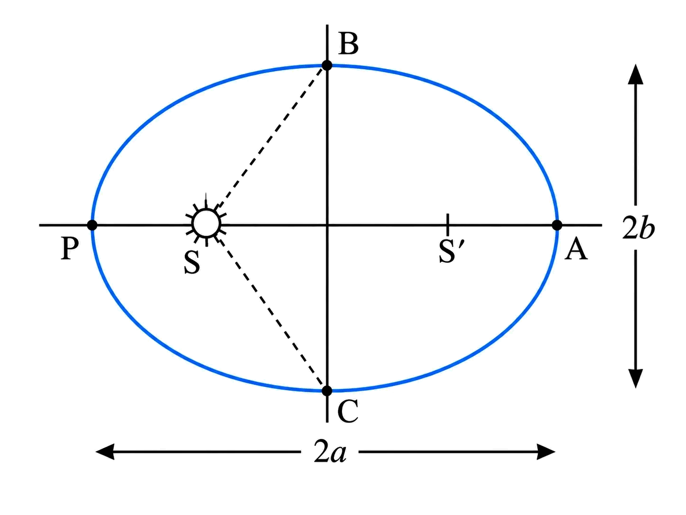
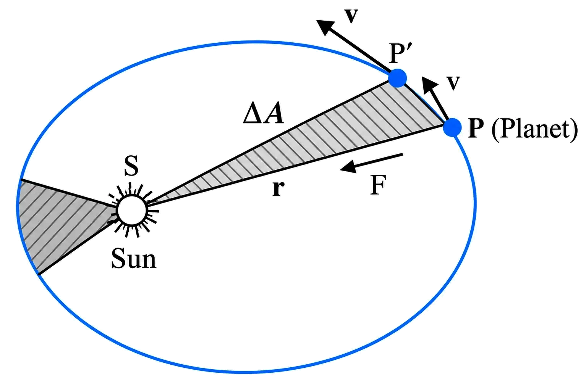
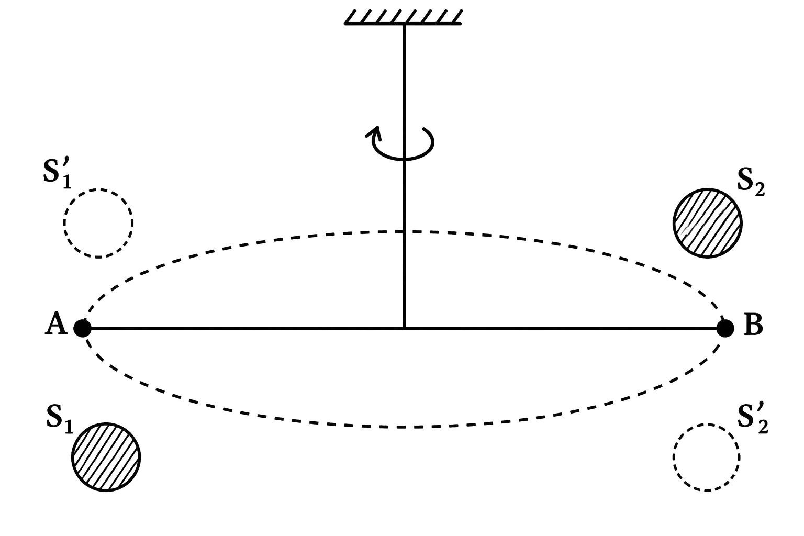
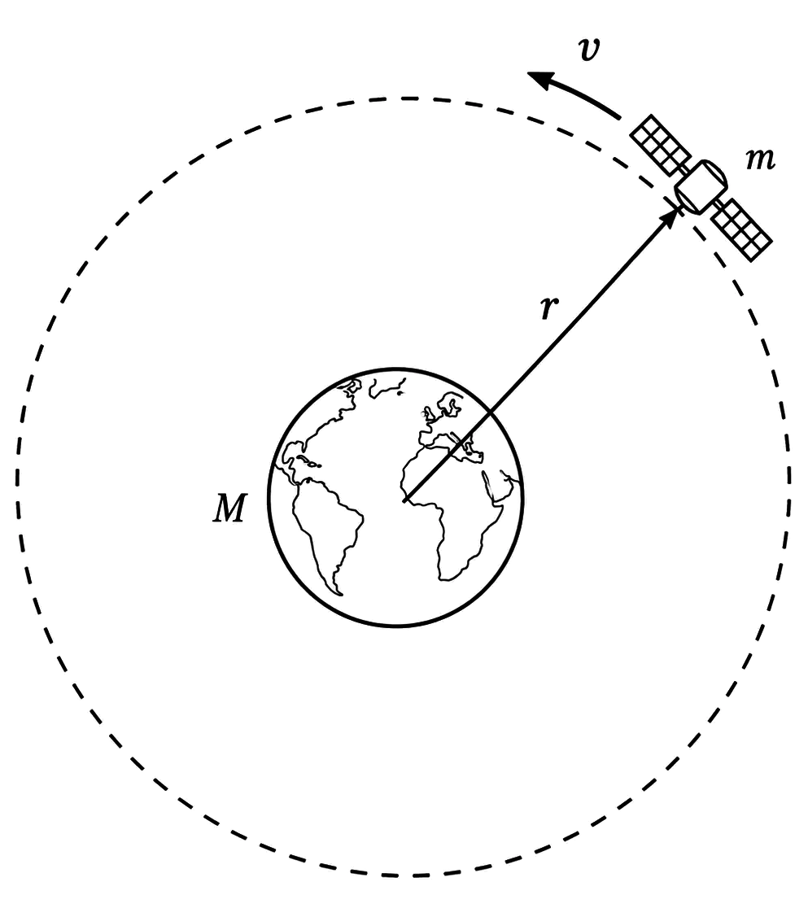
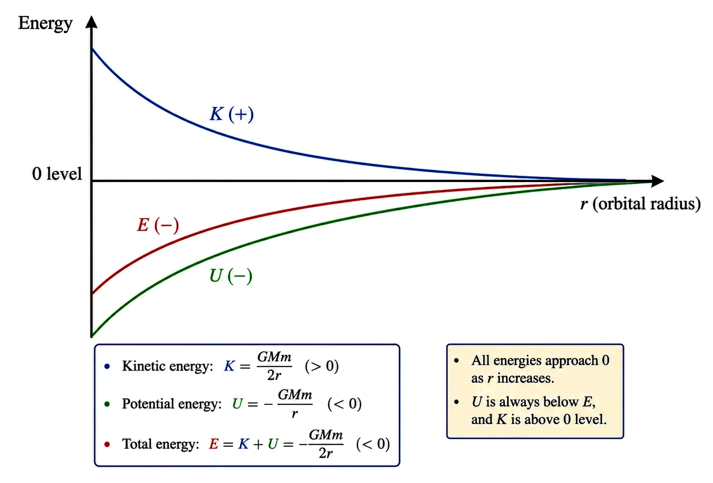

Class 11 · Physics
Gravitation
Elliptical orbits, equal areas in equal times, and T² ∝ a³ for revolution
KEPLER’S LAWS (PLANETARY MOTION)
1Definition & Introduction
- Kepler’s laws describe planetary motion under the Sun’s gravity: orbit shape, area rate, and period relation.
- Law of Orbits: Each planet moves in an ellipse with the Sun at one focus.
- Law of Areas: The Sun–planet line sweeps equal areas in equal times (constant areal velocity).
- Law of Periods: For planets around the same Sun, T² ∝ a³ where a is semi-major axis.
- Key ellipse terms: perihelion (closest), aphelion (farthest), semi-major axis a = half of major axis.
2 Diagram

TEllipse orbit with Sun at a focus; perihelion P, aphelion A, radius vector r
and swept area ΔA.
3Key Concepts
- 🧭Ellipse property: for any point, distance sum to two foci is constant.
- 🎯Perihelion: rp minimum; Aphelion: ra maximum.
- 🔄Areal velocity constant: ΔAΔt = constant ⇒ faster near perihelion.
- 📏For same central mass: T1²T2² = a1³a2³.
- ⚖️Law of areas follows from conservation of angular momentum in a central force.
4ORBIT GEOMETRY TERMS (JEE/NEET FAVOURITES)
- Foci (F₁, F₂): fixed points defining ellipse; Sun lies at one focus for a planet.
- Major axis: longest chord through both foci; in a Sun–planet orbit, the major axis along the Sun–focus line has endpoints at perihelion and aphelion.
- Semi-major axis a: half the major axis; for a circle, a becomes radius.
- Perihelion distance: rp; Aphelion distance: ra.
- For ellipse (Sun at a focus): a = rp + ra2.
5WHAT LAW OF AREAS IMPLIES (SPEED CHANGE)
- Equal ΔA in equal Δt ⇒ near perihelion, the planet sweeps a larger angle, so it moves faster.
- At perihelion and aphelion, velocity is tangential and r ⟂ v.
- Consequence: rpvp = rava (from angular momentum conservation).
6PERIHELION vs APHELION (IN ELLIPTICAL ORBIT)
| Basis | Perihelion (P) | Aphelion (A) |
|---|---|---|
| Sun–planet distance | Minimum rp | Maximum ra |
| Speed (Kepler II) | Maximum; moves faster | Minimum; moves slower |
| Angular momentum | Same as at A | Same as at P |
| Radius vector sweep | Same area in same time | Same area in same time |
7Formulas
In a short time Δt, displacement magnitude Δs ≈ vΔt. Area
swept is approximately a triangle with sides r and Δs.
ΔA = 12
r(vΔt) sinθ = 12 |r
× v| Δt
Areal velocity becomes
ΔAΔt = 12|r × v| = 12m|r × p| = L2m
For gravity (central force), torque about Sun is zero ⇒ L constant ⇒ areal
velocity constant.
τ = r × F = 0 ⇒ dLdt = 0 ⇒ dAdt = constant
Kepler III for orbits around the same central mass gives a constant ratio.
T²a³ = constant ⇒ T1²T2² = a1³a2³
| T = | time period of revolution (s or y) |
| a = | semi-major axis of ellipse (m or AU) |
| r = | instantaneous Sun–planet distance (m) |
| v = | instantaneous orbital speed (m s−1) |
| ΔA = | area swept by radius vector in time Δt (m2) |
| θ = | angle between vectors r and v |
| L = | orbital angular momentum about the Sun (kg m2 s−1) |
| m = | mass of orbiting body (kg) |
Kepler’s 3rd law (most used in numericals)
T²a³ = constant (same central
mass)
8Graph

For the same Sun, the square of the period obeys T² ∝ a³ (semi-major
axis).
9Solved Examples
1
Earth has TE = 1 y and aE = 1 AU. A planet has
semi-major axis a = 4 AU. Find its period T (in years).
Solution:
Use Kepler III for same Sun: T²a³ = constant ⇒ T²4³ = 1²1³.
So T² = 4³ = 64.
T = √64 = 8 y.
Use Kepler III for same Sun: T²a³ = constant ⇒ T²4³ = 1²1³.
So T² = 4³ = 64.
T = √64 = 8 y.
✓ T = 8 years
2
A planet moves in an elliptical orbit with perihelion distance
rp = 0.50 AU and aphelion distance ra = 1.50 AU. (a) Find
semi-major axis a. (b) If its speed at perihelion is vp = 60 km
s−1, find speed at aphelion va.
Solution:
(a) For an ellipse: a = rp + ra2 = 0.50 + 1.502 AU = 2.002 AU = 1.00 AU.
(b) At P and A, velocity is tangential, so r ⟂ v and angular momentum conservation gives rpvp = rava.
va = rpravp = 0.501.50×60 = 13×60 = 20 km s−1.
(a) For an ellipse: a = rp + ra2 = 0.50 + 1.502 AU = 2.002 AU = 1.00 AU.
(b) At P and A, velocity is tangential, so r ⟂ v and angular momentum conservation gives rpvp = rava.
va = rpravp = 0.501.50×60 = 13×60 = 20 km s−1.
✓ (a) a = 1.00 AU
(b) va = 20 km s−1
(b) va = 20 km s−1
10⭐Important Points
- Kepler’s 1st law: Sun at a focus, not at the centre (except circular orbit).
- Equal areas in equal times means dAdt is constant throughout the orbit.
- Planet is fastest at perihelion and slowest at aphelion (from constant areal velocity).
- Kepler’s 3rd law uses semi-major axis a, not instantaneous distance r.
- For two bodies orbiting same central mass: T ∝ a3/2.
11❌Common Mistakes
- Using r (current distance) in place of a in T² ∝ a³.
- Thinking “equal areas” means equal arc lengths; it is area swept, not path length.
- Placing the Sun at ellipse centre instead of one focus.
- Mixing aphelion/perihelion names (closest is perihelion).
12💡Memory Technique
“Mnemonic: OAP = Orbit–Area–Period”
13🧮Formula Sheet
Kepler I: Orbit is an ellipse; Sun at one focus.Kepler II: dAdt =
constant = L2mAt perihelion/aphelion: rpvp =
ravaKepler III: T²a³ = constant (same central
mass)Two-orbit ratio: T1²T2² = a1³a2³Semi-major axis from extremes: a = rp +
ra2
Kepler’s 2nd law as conservation of L for a central force; dA/dt is
constant
AREAL VELOCITY & ANGULAR MOMENTUM
1Definition & Introduction
- Areal velocity is the rate at which the radius vector sweeps area: dA/dt.
- For a small time Δt, swept area ΔA is the area of triangle formed by r and vΔt.
- Under a central force (F ∥ r), torque about the centre is zero ⇒ angular momentum conserved.
- Conservation of L implies constant dA/dt ⇒ equal areas in equal times (Kepler’s 2nd law).
- At perihelion/aphelion, r ⟂ v so L = mrv and v ∝ 1/r at those points.
2Diagram
For the same Sun, the square of the Radius vector from the Sun sweeps area ΔA in time Δt; dA/dt
stays constant.
3Key Concepts
- 🎯Central force: F always along radius vector r ⇒ τ = r×F = 0.
- 🧭Angular momentum: L = r×p = m(r×v); direction fixed (orbital plane).
- 🟩Swept area in Δt: ΔA = 1/2 |r×(vΔt)|.
- ⏱️Areal velocity: dA/dt = (1/2)|r×v| = |L|/(2m) = constant for central forces.
- 🏎️Planet speeds up near perihelion (small r) and slows near aphelion (large r).
4DERIVATION: KEPLER’S 2ND LAW FROM CONSERVATION OF L
- Small displacement in time Δt is vΔt; swept region is a triangle.
- ΔA = 1/2 |r×(vΔt)| ⇒ dA/dt = 1/2 |r×v|.
- L = r×p = m(r×v) ⇒ dA/dt = |L|/(2m).
- Central force: τ = r×F = 0 ⇒ dL/dt = 0 ⇒ L constant.
- Hence dA/dt constant ⇒ equal areas are swept in equal times.
5SPEED VARIATION: PERIHELION VS APHELION (EXAM-FAVOURITE)
- At perihelion (P) and aphelion (A), radial distance has an extremum ⇒ radial speed component is zero.
- So velocity is purely tangential: r ⟂ v at P and A.
- Then L = mrv and conservation gives rPvP = rAvA.
- If rA > rP then vP > vA; planet moves fastest near P.
6PERIHELION VS APHELION (USING L CONSERVATION)
| Basis | Perihelion (P) | Aphelion (A) |
|---|---|---|
| Distance from Sun | Minimum rP | Maximum rA |
| Direction of v | v tangential; r ⟂ v | v tangential; r ⟂ v |
| Speed (from L const.) | Larger vP | Smaller vA |
| Area swept per second | Same dA/dt | Same dA/dt |
7Formulas
Swept area in a small time Δt (triangle with sides r and vΔt):
ΔA = 12|r×(vΔt)|
Divide by Δt and take limit Δt→0:
dA/dt = 12|r×v|
Angular momentum about the centre:
L = r×p = r×(mv) =
m(r×v)
Relate areal velocity to L:
dA/dt = |L|2m
Central force gives zero torque:
τ = r×F = 0 ⇒ dL/dt = 0
| A = | Area swept by radius vector (m²) |
| dA/dt = | Areal velocity (m² s−1) |
| r = | Position vector from centre of force (m) |
| v = | Velocity vector (m s−1) |
| p = | Linear momentum = mv (kg m s−1) |
| L = | Angular momentum about centre (kg m² s−1) |
| τ = | Torque about centre (N m) |
| m = | Mass of orbiting body (kg) |
Kepler’s 2nd law result
dA/dt = |L|2m =
constant (central force)
8⭐Important Points
- Kepler’s 2nd law is a direct consequence of τ=0 for any central force.
- dA/dt depends on angular momentum, not on orbit shape (circle/ellipse).
- Vector form: dA/dt = 12|r×v|; scalar shortcut at P/A: dA/dt = rv2.
- At perihelion and aphelion, r ⟂ v and speeds satisfy rPvP = rAvA.
- If r halves near Sun, speed doubles (at turning points) to keep L constant.
9❌Common Mistakes
- Writing dA/dt = rv always; correct is (1/2)rv only when r ⟂ v.
- Assuming speed is constant in an elliptical orbit; only dA/dt is constant.
- Using L = mrv at all points; correct general form is L = m r v sinθ.
- Forgetting that torque is about the force centre; central force gives zero torque only about that point.
10💡Memory Technique
“Mnemonic: "CENtral → No TORque → Same AREA"”
11🧮Formula Sheet
Central force: F ∥ r ⇒ τ = r×F = 0 ⇒ dL/dt =
0Angular momentum: L = r×p = m(r×v); magnitude |L| = m r v
sinθSwept area (small time): ΔA = 12|r×(vΔt)|Areal velocity: dA/dt = 12|r×v| = |L|2m (constant for central forces)At perihelion/aphelion: r ⟂ v ⇒ rPvP =
rAvAKepler’s 2nd law: equal areas in equal times ⇔
constant dA/dt
Newton’s inverse-square attraction: magnitude, direction, vector form, action–reaction,
superposition
UNIVERSAL LAW OF GRAVITATION
1Definition & Introduction
- Any two point masses attract each other with force proportional to m1m2 and inversely proportional to r2.
- The gravitational force acts along the line joining the two masses and is always attractive.
- Magnitude: F = Gm1m2r2 where r is centre-to-centre separation.
- Vector form uses a unit vector (r-hat) to build direction into the formula.
- For many masses, net gravitational force is the vector sum of forces due to each mass (superposition).
2Diagram
Two point masses attract along the line joining them; forces are equal and opposite.
3Key Concepts
- 📏Inverse-square law: doubling r makes F one-fourth.
- 🧭Direction: force on each mass points toward the other mass (central force).
- ↔️Action–reaction: F12 = −F21 (equal magnitude, opposite direction).
- 🧩Superposition: Fnet = ΣFi (vector addition).
- 📜Universal: same law applies from apples to planets.
4VECTOR FORM (DIRECTION BUILT-IN)
- Let position vectors be r1, r2. Define separation vector from 1 to 2: r21 = r2 − r1.
- Unit vector from 1 to 2: r̂21 = r21|r21|.
- Force on m1 due to m2: F12 = Gm1m2|r21|2 r̂21 (points from 1 toward 2).
- Force on m2 due to m1: F21 = −F12.
5SUPERPOSITION (MANY MASSES)
- Net force on a test mass is the vector sum of pairwise gravitational forces.
- For masses m1, m2, …, mn acting on m: Fnet = ΣFi.
- Compute each force using centre-to-centre distance and its direction (unit vector), then add components.
6Formulas
Empirical proportionalities (Newton):
F ∝ m1m2 and F ∝
1r2
Combine using a constant of proportionality G:
F = Gm1m2r2
Vector form (force on 1 due to 2): define r21 =
r2 − r1
F12 = Gm1m2|r21|2
r̂21
| F = | Magnitude of gravitational force (N) |
| G = | Universal gravitational constant = 6.67×10−11 N m2 kg−2 |
| m1, m2 = | Interacting point masses (kg) |
| r = | Distance between the masses’ centres (m) |
| r21 = | Separation vector from mass 1 to mass 2: r2 − r1 (m) |
| r̂21 = | Unit vector from mass 1 to mass 2 (direction only) |
| F12, F21 = | Force on 1 due to 2, and on 2 due to 1 (N) |
Most important result
F = Gm1m2r2
and F12 = −F21
7Graph
Inverse-square trend: gravitational force decreases rapidly with distance.
8Solved Examples
1
Find the gravitational force between two masses m1 = 5 kg and
m2 = 10 kg separated by r = 2 m.
Solution:
Use F = Gm1m2r2.
Compute: m1m2 = 5×10 = 50 kg2, r2 = 22 = 4 m2.
F = 6.67×10−11 × 504 = 6.67×10−11 × 12.5 = 8.3375×10−10 N.
Direction: each mass experiences this force toward the other along the joining line.
Use F = Gm1m2r2.
Compute: m1m2 = 5×10 = 50 kg2, r2 = 22 = 4 m2.
F = 6.67×10−11 × 504 = 6.67×10−11 × 12.5 = 8.3375×10−10 N.
Direction: each mass experiences this force toward the other along the joining line.
✓ F ≈ 8.34×10−10 N (attractive, along the line joining the
masses).
2
Three point masses lie on a straight line: 2 kg at x=0 m, 3 kg at
x=2 m, and 1 kg at x=5 m. Find net gravitational force on the 3 kg mass.
Solution:
For the 3 kg mass, distances: to 2 kg is 2 m (left), to 1 kg is 3 m (right).
Force due to 2 kg on 3 kg: Fleft = G(2)(3)22 = G64 = 1.5G = 1.5×6.67×10−11 = 1.0005×10−10 N (toward left).
Force due to 1 kg on 3 kg: Fright = G(1)(3)32 = G39 = 13G = 2.2233×10−11 N (toward right).
Take right as +x: Fnet = +2.2233×10−11 − 1.0005×10−10 = −7.7817×10−11 N.
For the 3 kg mass, distances: to 2 kg is 2 m (left), to 1 kg is 3 m (right).
Force due to 2 kg on 3 kg: Fleft = G(2)(3)22 = G64 = 1.5G = 1.5×6.67×10−11 = 1.0005×10−10 N (toward left).
Force due to 1 kg on 3 kg: Fright = G(1)(3)32 = G39 = 13G = 2.2233×10−11 N (toward right).
Take right as +x: Fnet = +2.2233×10−11 − 1.0005×10−10 = −7.7817×10−11 N.
✓ Net force on 3 kg mass = 7.78×10−11 N toward the 2 kg mass
(left).
9⭐Important Points
- Always use centre-to-centre distance r for spherical bodies (treated as point masses externally).
- Gravitational force is mutual: two-body forces appear in pairs, obeying F12 = −F21.
- Units check: G has units N m2 kg−2 so that F comes out in N.
- Superposition: compute each pairwise force first; then add vectors/components, not magnitudes.
- In Newtonian gravitation, the force is always attractive and acts along the line joining the masses.
10❌Common Mistakes
- Using distance from surfaces instead of centre-to-centre separation r.
- Adding forces as scalars when directions differ; forgetting vector addition/components.
- Mixing up unit-vector direction (e.g., using r̂21 vs r̂12) causing sign errors.
- Forgetting that gravity is always attractive; never repulsive in Newtonian gravitation.
11💡Memory Technique
“MASS PRODUCT OVER DISTANCE SQUARE”
12🧮Formula Sheet
F = Gm1m2r2F12 = Gm1m2|r21|2
r̂21 (with r21=r2−r1)F21 = −F12Fnet = ΣFi (principle of superposition; vector
sum)G = 6.67×10−11 N m2
kg−2Inverse-square scaling: if r → kr, then
F → Fk2
Uniform spherical shell: outside acts like point mass at centre; inside net gravity is
zero
SHELL THEOREM APPLICATIONS
1Definition & Introduction
- Newton’s shell theorem: a uniform spherical shell attracts an external mass as if all shell mass were at its centre.
- For a point mass located anywhere inside a uniform spherical shell, the net gravitational force due to the shell is zero.
- Result extends to any spherically symmetric body: field outside depends only on total mass.
- Use superposition: a solid sphere can be treated as a stack of thin concentric shells.
- Inside a spherically symmetric body, only mass enclosed within radius r contributes; outer shells give zero.
2Diagram
Uniform spherical shell: external field equals point mass at centre; internal field
cancels to zero.
3Key Concepts
- 🎯Outside shell: F follows inverse-square with distance from centre, like a point mass.
- 🕳️Inside shell: contributions from nearer parts are stronger but fewer; exact cancellation gives zero.
- 🧩Spherical symmetry ⇒ net force is radial; transverse components cancel by pairing opposite elements.
- 🌍Inside Earth/mine: outer layers (radii > r) form shells that exert zero net force on you.
- ➕Extended bodies: compute by summing shells; effective mass outside is total mass, inside is enclosed mass.
4WHY INSIDE FORCE IS ZERO (COMPONENT CANCELLATION)
- Take an interior point P and the line OP to the shell’s centre.
- For every small mass element on one side, a paired element exists on the opposite side.
- Transverse components cancel by symmetry; only components along OP can survive.
- Closer patch gives larger force but covers smaller area; exact balance makes net along OP also cancel.
- Hence net gravitational field inside a uniform shell is zero everywhere (not just at centre).
5APPLICATIONS TO SPHERICALLY SYMMETRIC BODIES (EARTH / MINE FIG. 7.7 IDEA)
- Model a sphere as many thin concentric shells (superposition).
- At external point r ≥ R: each shell acts like its mass at centre ⇒ total acts like M at centre.
- At internal point r < R: shells with radius > r contribute zero (point lies inside them).
- Only enclosed mass Mr (within radius r) contributes: F = GMrmr2 toward centre.
- If density is uniform: Mr = M(r3/R3) ⇒ g(r) ∝ r.
6SHELL THEOREM QUICK COMPARISON
| Case | Net gravitational effect | Key idea |
|---|---|---|
| Point outside shell (r > R) | F = GMmr2 toward centre | Acts like point mass M at centre |
| Point inside shell (r < R) | F = 0 | All components cancel over the shell |
| Inside solid sphere (spherical symmetry) | F = GMrmr2 toward centre | Only enclosed mass Mr acts as if at centre; outer shells give zero |
7Formulas
Spherically symmetric body as concentric shells (superposition):
F(r) = Gm·Menclosed(r)r2
(radially inward)
For a uniform solid sphere: enclosed mass scales with volume:
Mr = Mr3R3
Hence internal gravitational acceleration (uniform density):
g(r) = GMrr2 =
GMR3r (so
g ∝ r)
| G = | universal gravitational constant (6.67×10−11 N m2 kg−2) |
| M = | total mass of spherical shell/body (kg) |
| m = | test mass (kg) |
| R = | radius of shell/body (m) |
| r = | distance of the test mass from centre (m) |
| Mr = | mass enclosed within radius r (kg) |
| g(r) = | gravitational acceleration at radius r due to the body (m s−2) |
Shell theorem (quoted result used repeatedly)
Uniform shell: outside ⇒ F=GMmr2,
inside ⇒ F=0
8Solved Examples
1
A thin uniform spherical shell has mass M = 2.0×105 kg and
radius R = 3.0 m. Find the gravitational force on a 10 kg mass placed (i) at r = 6.0
m from centre, (ii) at r = 2.0 m from centre.
Solution:
Use shell theorem: for r > R, treat shell as point mass at centre; for r < R, net force is zero.
(i) r=6 m: F=GMmr2 = (6.67×10−11)(2.0×105)(10)6.02 N
Compute numerator: (6.67×10−11)×(2.0×106) = 1.334×10−4.
Divide by 36: F = 1.334×10−436 ≈ 3.71×10−6 N toward centre.
(ii) r=2 m < R: inside a uniform shell ⇒ F=0.
Use shell theorem: for r > R, treat shell as point mass at centre; for r < R, net force is zero.
(i) r=6 m: F=GMmr2 = (6.67×10−11)(2.0×105)(10)6.02 N
Compute numerator: (6.67×10−11)×(2.0×106) = 1.334×10−4.
Divide by 36: F = 1.334×10−436 ≈ 3.71×10−6 N toward centre.
(ii) r=2 m < R: inside a uniform shell ⇒ F=0.
✓ (i) 3.71×10−6 N toward centre; (ii) 0 N
2
Assume Earth is a uniform sphere of radius RE=6.4×106
m. Find g at depth d=1.6×106 m below the surface. Take surface gravity
g0=9.8 m s−2.
Solution:
At depth d, distance from centre is r=RE−d.
Outer shell of thickness d contributes zero (shell theorem). Only inner sphere of radius r contributes.
For uniform density: g(r) = g0rRE = g0(1 − dRE).
Compute: dRE = 1.6×1066.4×106 = 0.25.
So g = 9.8×(1−0.25)=9.8×0.75=7.35 m s−2.
At depth d, distance from centre is r=RE−d.
Outer shell of thickness d contributes zero (shell theorem). Only inner sphere of radius r contributes.
For uniform density: g(r) = g0rRE = g0(1 − dRE).
Compute: dRE = 1.6×1066.4×106 = 0.25.
So g = 9.8×(1−0.25)=9.8×0.75=7.35 m s−2.
✓ g at the given depth = 7.35 m s−2
9⭐Important Points
- Shell theorem needs uniform shell (constant surface density) and spherical shape.
- Inside a shell: field is zero everywhere; not just at the centre.
- Outside any spherically symmetric body: depends only on total mass M, not on radius or layering.
- For interior points in a spherically symmetric body: ignore all mass at radii > r (outer shells).
- Direction of force is always along the line joining the point and the centre (radial).
10❌Common Mistakes
- Applying the inside-zero result to a solid sphere (wrong: only a shell gives zero inside).
- Using total mass M inside Earth instead of enclosed mass Mr.
- Thinking "inside shell" means only at the centre; actually any interior point has zero net force.
- Forgetting the condition of spherical symmetry; irregular bodies don’t reduce to a centre point mass.
11💡Memory Technique
“Mnemonic: O-I rule for shells”
12🧮Formula Sheet
Uniform spherical shell: for r ≥ R, F=GMmr2 (toward
centre)Uniform spherical shell: for r < R,
F=0Spherically symmetric body: outside (r ≥ R),
g(r)=GMr2Inside spherically symmetric body: g(r)=GMrr2Uniform solid sphere:
Mr=M(r3/R3) ⇒
g(r)=(GM/R3)rDepth form
(uniform Earth): g(d)=g0(1−d/RE)
Cavendish torsion balance: measure tiny gravitational torque → find G (\"weighed
the Earth\")
GRAVITATIONAL CONSTANT G
1Definition & Introduction
- Gravitational constant G is the proportionality constant in Newton’s law: F = GMmd2.
- G is universal: independent of medium, location, and the nature of masses.
- SI unit: N m2 kg−2; dimensional formula: M−1L3T−2.
- Measured first by Henry Cavendish (1798) using a torsion balance.
- With measured G, Earth’s mass follows from g and RE, hence: \"Cavendish weighed the Earth\".
2 Diagram

Large spheres attract small ones → gravitational couple twists wire until restoring
torque balances it.
3Key Concepts
- 🧵Torsion wire provides restoring torque proportional to twist angle θ.
- ⚖️Net force on the rod can be zero, but a couple produces a measurable torque.
- 🔎Tiny gravitational force is inferred from equilibrium twist, not measured directly.
- 🔁Swapping the large spheres reverses torque direction; helps detect small rotations.
- 📌Spheres can be treated as point masses at centres when separation ≫ radii.
4WORKING (CAVENDISH EXPERIMENT)
- Two small spheres (m) are fixed at the ends of a light rod; rod length (end-to-end) is L.
- Two large spheres (M) are placed near the small ones on opposite sides, producing equal and opposite forces.
- Gravitational force between neighbouring spheres: F = GMmd2, where d is centre-to-centre separation.
- The two forces form a couple; gravitational torque on the rod is τg = FL.
- Wire twists by angle θ; restoring torque: τr = Cθ, where C is torsion constant (N m rad−1).
5WHY \"CAVENDISH WEIGHED THE EARTH\"
- At Earth’s surface, g = GMERE2.
- So Earth’s mass: ME = gRE2G; once G is known, ME follows.
- Accepted value (SI): G = 6.67×10−11 N m2 kg−2.
6Formulas
Universal gravitation (point masses):
F = GMmd2
Gravitational torque (couple) on torsion rod of length L:
τg = FL
Restoring torque of wire (torsion constant C):
τr = Cθ
Equilibrium condition:
FL = Cθ
Substitute F and solve for G:
G = Cθd2MmL
| G = | universal gravitational constant (N m2 kg−2) |
| F = | gravitational force between one large sphere and neighbouring small sphere (N) |
| M, m = | masses of large and small spheres (kg) |
| d = | centre-to-centre separation of the interacting spheres (m) |
| L = | distance between the two small spheres (length of bar AB) (m) |
| θ = | equilibrium angle of twist of wire (rad) |
| C = | torsion constant = restoring torque per radian (N m rad−1) |
| τg, τr = | gravitational torque and restoring torque respectively (N m) |
Cavendish equilibrium relation (used to compute G)
G = Cθd2MmL
; G = 6.67×10−11 N m2 kg−2 (accepted)
7Solved Examples
1
A Cavendish balance uses M = 10 kg, m = 0.020 kg, d = 0.050
m, bar length L = 0.20 m. Torsion constant C = 2.0×10−6 N m
rad−1. Equilibrium twist θ = 0.10 rad. Find G.
Solution:
Use G = Cθd2MmL.
Numerator: Cθd2 = (2.0×10−6)(0.10)(0.050)2 = (2.0×10−7)(0.0025) = 5.0×10−10.
Denominator: MmL = (10)(0.020)(0.20) = (0.20)(0.20) = 0.040.
So G = 5.0×10−100.040 = 1.25×10−8 N m2 kg−2.
Use G = Cθd2MmL.
Numerator: Cθd2 = (2.0×10−6)(0.10)(0.050)2 = (2.0×10−7)(0.0025) = 5.0×10−10.
Denominator: MmL = (10)(0.020)(0.20) = (0.20)(0.20) = 0.040.
So G = 5.0×10−100.040 = 1.25×10−8 N m2 kg−2.
✓ G = 1.25×10−8 N m2 kg−2 (this
hypothetical setup is not tuned to the accepted value).
2
Using accepted G = 6.67×10−11 N m2 kg−2,
find Earth’s mass from g = 9.8 m s−2 and RE =
6.4×106 m.
Solution:
Use ME = gRE2G.
RE2 = (6.4×106)2 = 40.96×1012 = 4.096×1013 m2.
Numerator gRE2 = 9.8×4.096×1013 = 40.1408×1013 = 4.01408×1014.
ME = 4.01408×10146.67×10−11 = (4.014086.67)×1025 ≈ 0.6018×1025 = 6.02×1024 kg.
Use ME = gRE2G.
RE2 = (6.4×106)2 = 40.96×1012 = 4.096×1013 m2.
Numerator gRE2 = 9.8×4.096×1013 = 40.1408×1013 = 4.01408×1014.
ME = 4.01408×10146.67×10−11 = (4.014086.67)×1025 ≈ 0.6018×1025 = 6.02×1024 kg.
✓ ME ≈ 6.02×1024 kg.
8⭐Important Points
- In a torsion balance, forces on the bar can cancel but the couple produces torque.
- For small twists, restoring torque is proportional to angle: τr = Cθ.
- Use d as centre-to-centre separation of spheres, not surface gap.
- Treat spheres as point masses only when separation is much larger than their radii.
- G is extremely small (6.67×10−11 in SI), showing gravity is weak.
9❌Common Mistakes
- Confusing g (m s−2) with G (N m2 kg−2).
- Using degrees for θ in Cθ without converting to radians.
- Using surface-to-surface distance instead of centre distance d in inverse-square law.
- Mixing symbols: using τ for both torque and torsion constant; keep torsion constant as C.
10💡Memory Technique
“Torsion balance hook”
11🧮Formula Sheet
Newton’s law: F = GMmd2SI unit of G: N m2 kg−2; dimensions:
M−1L3T−2Cavendish balance:
τg = FL, τr = Cθ, and FL
= CθFrom Cavendish equilibrium: G = Cθd2MmLEarth relation: g = GMERE2
and ME = gRE2GAccepted value: G = 6.67×10−11 N m2 kg−2
Derive g on Earth; study variation with altitude h and depth d
(uniform density)
ACCELERATION DUE TO GRAVITY (g)
1Definition & Introduction
- Acceleration due to gravity g is gravitational acceleration of a freely falling body towards Earth’s centre.
- Near Earth’s surface (neglecting Earth’s rotation), weight W = mg and gravitational force on mass m is approximately mg (units: N).
- For a spherically symmetric Earth, outside points behave as if all mass is at the centre (shell theorem).
- g decreases with altitude because distance from Earth’s centre increases.
- Inside Earth (uniform density), only mass within radius r contributes; hence g decreases linearly with depth.
2Diagram
Outside: treat Earth’s mass at centre; inside (uniform density): only inner sphere
contributes.
3Key Concepts
- 🧲Surface value: g = GMERE2 ≈ 9.8 m s−2
- ⬆️At height h: g(h) = GME(RE+h)2
- 🧠For h≪RE, let x=h/RE: (1+x)−2 ≈ 1−2x ⇒ g(h) ≈ g(1−2h/RE)
- ⛏️At depth d (uniform density): g(d) = g(1−d/RE)
- 🧩Mass inside radius (RE−d): Ms/ME = (RE−d)3/RE3
4SURFACE VALUE: DERIVATION OF g
- On surface: gravitational force F = GMEmRE2.
- By Newton’s 2nd law: F = mg ⇒ g = GMERE2.
- Direction of g: radially inward, towards Earth’s centre.
5VARIATION WITH ALTITUDE & DEPTH (KEY RESULTS)
- At altitude h: g(h) = GME(RE+h)2 = gRE2(RE+h)2.
- If h≪RE: g(h) ≈ g(1−2h/RE).
- At depth d (uniform ρ): g(d) = g(1−d/RE); becomes 0 at centre.
- Uniform density step: Ms/ME = (RE−d)3/RE3.
6g above vs below Earth’s surface
| Basis | Altitude (h above surface) | Depth (d below surface, uniform ρ) |
|---|---|---|
| Distance from centre | r = RE+h | r = RE−d |
| Mass producing gravity | Entire ME acts as at centre | Only inner sphere mass Ms contributes |
| Exact g | g(h) = GME(RE+h)2 | g(d) = g(1−d/RE) |
| Near-surface approximation | g(h) ≈ g(1−2h/RE) | g(d) decreases linearly with d |
7Formulas
Surface of Earth (distance RE from centre):
F = GMEmRE2
Use F = mg:
mg = GMEmRE2
⇒ g = GMERE2
At height h (distance RE+h):
g(h) = GME(RE+h)2
= g(1+h/RE)−2
Binomial for |x|≪1: (1+x)−2 ≈ 1−2x:
g(h) ≈
g(1−2h/RE)
At depth d: inner mass ratio (uniform density):
MsME = (RE−d)3RE3
Then g(d) = GMs(RE−d)2:
g(d) = gRE2(RE−d)RE3
= g(1−d/RE)
| g = | acceleration due to gravity (m s−2) |
| G = | universal gravitational constant = 6.67×10−11 N m2 kg−2 |
| ME = | mass of Earth (kg) |
| RE = | radius of Earth ≈ 6.4×106 m |
| m = | mass of body (kg) |
| h = | altitude above Earth’s surface (m) |
| d = | depth below Earth’s surface (m) |
| Ms = | mass of Earth inside radius (RE−d) for uniform density (kg) |
Most important results
g = GMERE2
; g(h) = GME(RE+h)2
≈ g(1−2h/RE) ; g(d) =
g(1−d/RE)
8Solved Examples
1
Find g at altitude h = 400 km above Earth. Take RE
= 6.4×106 m, g = 9.8 m s−2. Also compute percent decrease from
surface.
Solution:
Use g(h) = gRE2(RE+h)2.
RE+h = 6.4×106 + 4.0×105 = 6.8×106 m.
Ratio = (6.46.8)2 = (0.941176...)2 ≈ 0.885813.
g(h) = 9.8×0.885813 ≈ 8.68097 m s−2 ≈ 8.68 m s−2.
Percent decrease = 9.8−8.680979.8×100 ≈ 11.42% ≈ 11.4%.
Use g(h) = gRE2(RE+h)2.
RE+h = 6.4×106 + 4.0×105 = 6.8×106 m.
Ratio = (6.46.8)2 = (0.941176...)2 ≈ 0.885813.
g(h) = 9.8×0.885813 ≈ 8.68097 m s−2 ≈ 8.68 m s−2.
Percent decrease = 9.8−8.680979.8×100 ≈ 11.42% ≈ 11.4%.
✓ g(400 km) ≈ 8.68 m s−2; decrease ≈ 11.4% from surface.
2
A mine is 10 km deep. Assuming uniform density Earth, find g at the bottom.
Take RE = 6.4×106 m, surface g = 9.8 m s−2.
Solution:
For depth d: g(d) = g(1−d/RE).
d/RE = (1.0×104)/(6.4×106) = 1.5625×10−3.
So factor = 1−1.5625×10−3 = 0.9984375.
g(d) = 9.8×0.9984375 = 9.7846875 ≈ 9.785 m s−2.
For depth d: g(d) = g(1−d/RE).
d/RE = (1.0×104)/(6.4×106) = 1.5625×10−3.
So factor = 1−1.5625×10−3 = 0.9984375.
g(d) = 9.8×0.9984375 = 9.7846875 ≈ 9.785 m s−2.
✓ g(10 km depth) ≈ 9.785 m s−2 (uniform density
approximation).
9⭐Important Points
- Outside Earth: use point-mass formula with distance from centre, not height from ground.
- Altitude dependence is inverse-square; for small h, decrease is approximately linear in h.
- Depth dependence (uniform ρ) is linear: g decreases to 0 at Earth’s centre.
- Shell theorem: outer shells give zero net force for an interior point.
- For small changes: Δg/g ≈ −2h/RE (altitude), and ≈ −d/RE (depth).
10❌Common Mistakes
- Using RE−d in the altitude formula or RE+h in the depth case.
- Forgetting the square in g(h) ∝ 1/(RE+h)2.
- Applying g(d) = GME(RE−d)2 (wrong: uses total mass).
- Using binomial approximation when h is not small compared to RE.
11💡Memory Technique
“2-UP, 1-DOWN”
12🧮Formula Sheet
F = mgg = GMERE2g(h) = GME(RE+h)2
= g(1+h/RE)−2g(h) ≈
g(1−2h/RE) for h≪REMsME = (RE−d)3RE3
(uniform density)g(d) =
g(1−d/RE) (uniform density)
From work done by gravity → potential energy, potential (per unit mass), and
superposition
GRAVITATIONAL POTENTIAL ENERGY
1Definition & Introduction
- Gravitational potential energy U(r) is defined so that ΔU = −Wg (work done by gravity).
- Gravity is a conservative force: work depends only on initial and final positions, not the path.
- For two masses, the natural reference is zero at infinity: U(∞)=0.
- Then U(r) is negative for attraction: bound states have U<0.
- Gravitational potential V(r) is potential energy per unit test mass: V=U/m.
2Key Concepts
- 🧲Conservative: ∮F·dr=0 ⇒ potential energy exists.
- ↔️Work–energy link: Wg(1→2)=U(r1)−U(r2).
- ♾️Choose reference: U(∞)=0 ⇒ no arbitrary constant in final formula.
- ➕Superposition: total U is sum over all interacting pairs in a system.
- 📉As r increases, U increases toward 0 (becomes less negative).
3WORK DONE BY GRAVITY → POTENTIAL ENERGY
- For radial motion, F(r) = −GMmr2 (towards centre).
- Wg(r1→r2) = ∫r1r2 F·dr = GMm(1r2−1r1).
- Define ΔU = U2−U1 = −Wg ⇒ U(r) = −GMmr + constant.
- Choosing U(∞)=0 fixes constant = 0.
4POTENTIAL (UNIT MASS) + SUPERPOSITION
- Gravitational potential due to a mass M: V(r) = U(r)m = −GMr (units J kg−1).
- Potential energy of two masses m1, m2: U = −Gm1m2r.
- Many-particle system: Utotal = Σi<j −Gmimjrij.
- Potential at a point due to many masses: V = Σ −Gmiri.
5WORK DONE BY GRAVITY vs POTENTIAL ENERGY CHANGE
| Basis | Work by gravity Wg | Change in potential energy ΔU |
|---|---|---|
| Sign relation | Wg = −ΔU | ΔU = −Wg |
| Going away (r increases) | Negative | Positive (less negative U) |
| Going closer (r decreases) | Positive | Negative (more negative U) |
| Path dependence | Independent of path (conservative) | Depends only on endpoints |
6Formulas
Gravitational force on m due to a spherically symmetric mass M:
F(r) = −GMmr2
Work done by gravity moving radially from r1 to
r2:
Wg =
∫r1r2 F dr =
−GMm∫r1r2 1r2 dr
Integrate: ∫ r−2 dr = −1r
Wg = GMm(1r2−1r1)
Define ΔU = −Wg ⇒ U(r) form:
U(r) = −GMmr + constant
Choose U(∞)=0 to fix constant:
U(r) = −GMmr
| G = | universal gravitational constant (6.67×10−11 N m2 kg−2) |
| M = | source mass producing gravitational field (kg) |
| m = | test mass (kg) |
| r, r1, r2 = | distance from source centre (m) |
| U = | gravitational potential energy (J) |
| V = | gravitational potential = U/m (J kg−1) |
| rij = | separation between particles i and j (m) |
Most important result (zero at infinity)
U(r) = −GMmr ,
V(r) = −GMr
7Graph
Gravitational potential V(r) is negative and approaches 0 at infinity.
8Solved Examples
1
A 2 kg mass is moved radially outward from r1=6.0×106
m to r2=8.0×106 m from Earth’s centre. Take
GME=3.986×1014 m3 s−2. Find (i) work
done by gravity, (ii) change in potential energy.
Solution:
Use Wg=GMEm(1r2−1r1).
1r2=1/(8.0×106)=1.25×10−7 m−1.
1r1=1/(6.0×106)=1.6667×10−7 m−1.
Difference = 1.25×10−7 − 1.6667×10−7 = −4.1667×10−8 m−1.
Wg = (3.986×1014)(2)(−4.1667×10−8) J ≈ −3.322×107 J.
ΔU=−Wg ≈ +3.322×107 J.
Use Wg=GMEm(1r2−1r1).
1r2=1/(8.0×106)=1.25×10−7 m−1.
1r1=1/(6.0×106)=1.6667×10−7 m−1.
Difference = 1.25×10−7 − 1.6667×10−7 = −4.1667×10−8 m−1.
Wg = (3.986×1014)(2)(−4.1667×10−8) J ≈ −3.322×107 J.
ΔU=−Wg ≈ +3.322×107 J.
✓ Wg ≈ −3.32×107 J; ΔU ≈
+3.32×107 J.
2
Example (square, superposition): Four equal masses m=0.50 kg are fixed at
the corners of a square of side l=0.20 m. Find (i) total gravitational potential energy of
the system, (ii) gravitational potential at the square’s centre. Take
G=6.67×10−11 N m2 kg−2.
Solution:
Total potential energy is sum over all pairs: 4 edge pairs at distance l, and 2 diagonal pairs at distance √2l.
Utotal=−Gm2(4l+2√2l)=−Gm2l(4+√2).
Compute factor: (4+√2)=4+1.4142=5.4142.
Gm2l= (6.67×10−11×0.502) / 0.20 = (6.67×10−11×0.25)/0.20 = 8.3375×10−11 J.
Utotal = −(8.3375×10−11)(5.4142) ≈ −4.515×10−10 J.
Centre is at distance r=l√2 from each corner. Potential at centre: VC=4(−Gmr)=−4Gm√2l.
Total potential energy is sum over all pairs: 4 edge pairs at distance l, and 2 diagonal pairs at distance √2l.
Utotal=−Gm2(4l+2√2l)=−Gm2l(4+√2).
Compute factor: (4+√2)=4+1.4142=5.4142.
Gm2l= (6.67×10−11×0.502) / 0.20 = (6.67×10−11×0.25)/0.20 = 8.3375×10−11 J.
Utotal = −(8.3375×10−11)(5.4142) ≈ −4.515×10−10 J.
Centre is at distance r=l√2 from each corner. Potential at centre: VC=4(−Gmr)=−4Gm√2l.
✓ (i) Utotal ≈ −4.52×10−10 J. (ii)
Vcentre ≈ −9.43×10−10 J kg−1.
9⭐Important Points
- Only difference in potential energy is physically measurable; absolute zero is chosen by convention.
- With U(∞)=0, potential energy is negative everywhere for attractive gravity.
- Do not confuse V (potential, J kg−1) with U (potential energy, J).
- For many particles, sum over pairs once: Σi<j, not Σi≠j.
- Near Earth surface (small h), ΔU≈mgΔh; exact uses −GMm/r.
10❌Common Mistakes
- Writing U=+GMmr (wrong sign for attraction with zero at infinity).
- Using mgh for large heights where g changes significantly.
- Double-counting pairs in multi-particle potential energy.
- Mixing up work done by gravity and by external agent: Wext=ΔU for slow lifting.
11💡Memory Technique
“"GO DOWN → GIVES" sign rule”
12🧮Formula Sheet
Wg(r1→r2) =
GMm(1r2−1r1)ΔU = −WgU(r) = −GMmr (if
U(∞)=0)V(r) = Um = −GMrTwo
masses: U = −Gm1m2rMany particles: Utotal = Σi<j −GmimjrijNear surface (small height): ΔU≈mgΔh
Energy method: minimum launch speed to reach infinity with zero final speed (no air drag,
no thrust).
ESCAPE SPEED
1Definition & Introduction
- Escape speed at a point is the minimum speed needed so that the body can reach infinity with final speed 0 (just escapes).
- It is obtained using conservation of mechanical energy with gravitational potential energy U(r) = −GMm/r (taking U(∞)=0).
- For a spherical body (mass M, radius R): ve = √(2GM/R) (independent of projectile mass).
- At height h above surface: ve(h) = √(2GM/(R+h)).
- Typical values: Earth ve ≈ 11.2 km/s; Moon ve ≈ 2.38 km/s.
2 Diagram
Escape speed is defined by reaching infinity with zero final speed (minimum case).
3Key Concepts
- ⚖️Escape condition: total mechanical energy ≥ 0; for minimum escape, total energy = 0.
- 🧲Choosing U(∞)=0 makes escape criterion simple using energy conservation.
- ⬇️ve depends on M and starting distance (r), not on projectile mass.
- 🧭Direction at launch does not change the minimum speed in a central conservative field (ignoring atmosphere/rotation).
- 🎯If vi > ve, the body escapes with nonzero speed at infinity.
4DERIVATION (ENERGY CONSERVATION)
- Take U(∞)=0; ignore air drag and any rocket thrust after launch.
- From distance r0: 12mvi2 − GMmr0 = 12mv∞2.
- Minimum escape: v∞=0 ⇒ ve=√(2GMr0).
- From Earth surface: r0=RE ⇒ ve=√(2GMERE)=√(2gRE).
5Escape speed vs Orbital (circular) speed
| Basis | Circular orbit at radius r | Escape from radius r |
|---|---|---|
| Energy condition | Total mechanical energy < 0 (bound); for circular: E=−GMm2r | Total mechanical energy ≥ 0 (unbound); for minimum escape: E=0 |
| Speed formula | vorb=√(GMr) | ve=√(2GMr) |
| Relation (same r) | — | ve=√2 vorb |
| Path for limiting case | Circle (special bound orbit) | Parabola (minimum escape); faster gives hyperbola |
6Formulas
Potential energy (zero at ∞):
U(r) = −GMmr
Energy at launch distance r0:
Ei=12mvi2 − GMmr0
Energy at infinity:
E∞=12mv∞2
Conservation Ei=E∞:
12mvi2 − GMmr0 = 12mv∞2
Minimum escape (v∞=0):
ve = √(2GMr0)
| G = | universal gravitational constant (6.67×10−11 N m2 kg−2) |
| M = | mass of attracting body (kg) |
| m = | mass of projectile (kg) |
| R = | radius of the body (m) |
| r, r0 = | distance from body’s centre (m) |
| g = | acceleration due to gravity at surface: g=GM/R2 |
| ve = | escape speed (m/s) |
| v∞ = | speed at infinity (m/s) |
Most important result
ve=√(2GMR) = √(2gR)
7Solved Examples
1
Calculate Earth’s escape speed from the surface using g=9.8 m
s−2 and RE=6.4×106 m.
Solution:
Use ve=√(2gRE).
2gRE = 2×9.8×6.4×106 = 125.44×106 = 1.2544×108 (m2/s2).
ve = √(1.2544×108) = √(1.2544)×104 = 1.12×104 m/s.
Convert: 1.12×104 m/s = 11.2 km/s.
Use ve=√(2gRE).
2gRE = 2×9.8×6.4×106 = 125.44×106 = 1.2544×108 (m2/s2).
ve = √(1.2544×108) = √(1.2544)×104 = 1.12×104 m/s.
Convert: 1.12×104 m/s = 11.2 km/s.
✓ ve(Earth) = 11.2 km/s (approx.).
2
At what height above Earth’s surface will escape speed become 10.0 km/s? Take
ve(r)=√(2GM/r), and use surface value
ve0=11.2 km/s at r=RE.
Solution:
Use ratio: veve0 = √(RERE+h).
Square both sides: (10.011.2)2 = RERE+h.
(10.0/11.2)2 = (0.892857...)2 = 0.797193... so RE+h = RE0.797193... = 1.2544RE.
So h = (1.2544−1)RE = 0.2544RE.
With RE=6.4×106 m: h=0.2544×6.4×106 = 1.62816×106 m ≈ 1.63×106 m.
Use ratio: veve0 = √(RERE+h).
Square both sides: (10.011.2)2 = RERE+h.
(10.0/11.2)2 = (0.892857...)2 = 0.797193... so RE+h = RE0.797193... = 1.2544RE.
So h = (1.2544−1)RE = 0.2544RE.
With RE=6.4×106 m: h=0.2544×6.4×106 = 1.62816×106 m ≈ 1.63×106 m.
✓ h ≈ 1.63×106 m ≈ 1630 km.
8⭐Important Points
- Minimum escape corresponds to a parabolic trajectory: total mechanical energy equals zero.
- ve is independent of projectile mass, but depends on starting distance from the centre.
- Use U(r) = −GMm/r for large heights; mgh is valid only for h ≪ R with nearly constant g.
- If vi > ve, then the leftover speed at infinity is v∞=√(vi2−ve2).
- Earth’s rotation and atmosphere reduce the required launch speed in practice; ideal escape speed neglects both.
9❌Common Mistakes
- Using mgh up to infinity; valid only for small heights where g is nearly constant.
- Forgetting gravitational potential energy is negative when U(∞)=0 is chosen.
- Confusing escape speed with orbital speed; missing the √2 factor at the same radius.
- Mixing km/s and m/s inside the square root without handling powers of 10.
10💡Memory Technique
“"Escape = √(2) × Orbit" hook”
11🧮Formula Sheet
Definition: minimum speed to reach ∞ with final speed 0 (ideal: no drag,
no thrust after launch).Gravitational potential energy (with U(∞)=0):
U(r)=−GMm/r.Escape speed from distance
r0: ve=√(2GM/r0).From surface: ve=√(2GM/R)=√(2gR).At height h:
ve(h)=√(2GM/(R+h)).Speed at
infinity if launched with vi:
v∞=√(vi2−ve2).Relation at same radius: ve=√2 vorb.
Gravity provides centripetal force → orbital speed, time period, and Kepler’s 3rd law
around Earth
EARTH SATELLITES (CIRCULAR ORBITS)
1Definition & Introduction
- An Earth satellite is a body moving around Earth under Earth’s gravitational attraction.
- For a circular orbit at height h, orbital radius is r = RE + h (measured from Earth’s centre).
- In uniform circular motion, gravity itself acts as the centripetal force (no extra force needed).
- In the ideal two-body model, orbital speed and time period depend on r (or h), not on satellite mass.
- Moon is Earth’s natural satellite; its orbit is nearly circular with period ≈ 27.3 days and mean Earth–Moon distance ≈ 3.84 × 108 m.
2Diagram
Circular orbit: velocity tangential, gravitational force radially inward; r
measured from Earth’s centre.
3Key Concepts
- 🧲Key idea: Fg supplies exactly Fc for a circular satellite orbit.
- ⚡Result: V = √(GME/r) decreases with altitude as r−1/2.
- ⏱️Result: T = 2π√(r3/(GME)) increases with altitude as r3/2.
- 📈Kepler (Earth satellites): T2 ∝ r3 with same constant for all satellites about Earth.
- 🌍Near Earth (h ≪ RE): T is about 84–85 min; typical LEO is around 90 min.
4WORKING: FROM FORCES TO ORBITAL SPEED
- Orbital radius: r = RE + h.
- Centripetal force needed: Fc = mV2r.
- Gravitational force: Fg = GmMEr2.
- For a circular orbit: Fc = Fg ⇒ satellite mass m cancels.
- Hence V depends only on Earth and orbit radius: V ∝ r−1/2.
5PERIOD & KEPLER’S THIRD LAW (EARTH SATELLITES)
- Time period is circumference ÷ speed: T = 2πrV.
- Substitute V = √(GME/r) ⇒ T = 2π√(r3GME).
- Square it: T2 = (4π2GME)r3, i.e. Kepler’s 3rd law about Earth.
- Near Earth (h ≪ RE, taking g ≈ surface gravity): T ≈ 2π√(REg) ≈ 85 min.
6LOW EARTH ORBIT VS MOON (NATURAL SATELLITE)
| Basis | LEO satellite | Moon |
|---|---|---|
| Type | Artificial (man-made) | Natural satellite |
| Typical orbit shape | Nearly circular | Nearly circular (slightly elliptical) |
| Typical altitude h | Few × 102 km | Mean Earth–Moon distance (centre-to-centre) ≈ 3.84 × 108 m; corresponding altitude above Earth’s surface ≈ 3.78 × 108 m |
| Period scale | ≈ 90 min (near-surface limit ≈ 85 min) | ≈ 27.3 days |
| Use of formulas | Use r=RE+h | Use r = Earth–Moon distance (centre-to-centre) |
7Formulas
Let orbit radius be r = RE + h.
Fc = mV2r
Gravity provides the centripetal force for circular orbit.
mV2r = GmMEr2
Cancel m and solve for speed.
V2 = GMEr = GMERE+h
Use T = distance/speed for one revolution.
T = 2πrV
Substitute V and square to get Kepler’s 3rd law.
T2 = 4π2GMEr3
= 4π2GME(RE+h)3
| RE = | Radius of Earth (m) |
| h = | Satellite height above Earth’s surface (m) |
| r = | Orbital radius from Earth’s centre, r=RE+h (m) |
| m = | Mass of satellite (kg) |
| ME = | Mass of Earth (kg) |
| G = | Universal gravitational constant (N m2 kg−2) |
| V = | Orbital speed in circular orbit (m s−1) |
| T = | Time period of revolution (s) |
Kepler’s 3rd law for Earth satellites
T2 = 4π2GME(RE+h)3
8Solved Examples
1
A satellite is in a circular orbit at height h = 400 km above Earth. Take
RE = 6.4 × 106 m and GME = 3.986 × 1014
m3 s−2. Find orbital speed V and period T.
Solution:
Orbital radius: r = RE + h = 6.4×106 + 4.0×105 = 6.8×106 m.
V = √(GMEr) = √(3.986×10146.8×106) = √(5.8618×107) m s−1.
√(5.8618×107) ≈ 7656 m s−1 (≈ 7.66×103 m s−1).
T = 2πrV = 2π(6.8×106)7656 s ≈ 5582 s.
Convert to minutes: 5582 s ÷ 60 ≈ 93.0 min.
Orbital radius: r = RE + h = 6.4×106 + 4.0×105 = 6.8×106 m.
V = √(GMEr) = √(3.986×10146.8×106) = √(5.8618×107) m s−1.
√(5.8618×107) ≈ 7656 m s−1 (≈ 7.66×103 m s−1).
T = 2πrV = 2π(6.8×106)7656 s ≈ 5582 s.
Convert to minutes: 5582 s ÷ 60 ≈ 93.0 min.
✓ V ≈ 7.66 × 103 m s−1; T ≈ 5.58 ×
103 s ≈ 93.0 min.
2
A near-surface satellite has period about 85 minutes. Using T = 2π√(REg), verify the order of
magnitude. Take RE = 6.4 × 106 m and g = 9.8 m s−2.
Solution:
Compute REg = 6.4×1069.8 s2 ≈ 6.5306×105 s2.
√(6.5306×105) ≈ 808 s.
T = 2π × 808 s ≈ 5076 s.
Convert to minutes: 5076 s ÷ 60 ≈ 84.6 min.
Compute REg = 6.4×1069.8 s2 ≈ 6.5306×105 s2.
√(6.5306×105) ≈ 808 s.
T = 2π × 808 s ≈ 5076 s.
Convert to minutes: 5076 s ÷ 60 ≈ 84.6 min.
✓ T ≈ 5.08 × 103 s ≈ 84.6 min (≈ 85 min).
9⭐Important Points
- Always use orbital radius r from Earth’s centre: r = RE + h.
- For circular orbit: mV2r = GmMEr2 ⇒ V independent of satellite mass.
- V decreases with height; T increases with height.
- Kepler’s 3rd law about Earth: T2 ∝ r3 with constant 4π2GME.
- Near Earth (h ≪ RE, using surface g): T ≈ 2π√(REg) ≈ 85 min; typical LEO periods are around 90 min.
10❌Common Mistakes
- Using h instead of r in formulas (r = RE + h).
- Forgetting that gravity itself is centripetal; writing an extra “centripetal force” in addition to gravity.
- Assuming heavier satellites move faster in the same orbit; mass cancels in V and T.
- Mixing units (km with m) while using GME in SI units.
11💡Memory Technique
“RVT: Radius → Velocity → Time”
12🧮Formula Sheet
r = RE + hFc = mV2rFg = GmMEr2V2 = GMEr = GMERE+hT = 2πrVT2 = 4π2GMEr3
= 4π2GME(RE+h)3Near Earth (h ≪ RE, g ≈ surface value): T ≈
2π√(REg) ≈ 85 min
K, U, and total energy for circular orbit; negative E ⇒ bound motion; elliptic case via
semi-major axis
ENERGY OF ORBITING SATELLITE
1Definition & Introduction
- Mechanical energy of an orbiting satellite is E = K + U, with U taken zero at ∞.
- For a gravitationally bound satellite, E is negative (cannot reach ∞ with zero speed).
- In a circular orbit at radius r = RE + h, energies are fixed numbers (no variation with time).
- In an elliptical orbit, K and U vary along the path but E stays constant.
- To escape Earth’s gravity from radius r, the condition is E ≥ 0 (parabolic at E = 0).
2 Diagram

Circular orbit: v tangential, gravity provides centripetal force; energies
depend on r.
3Key Concepts
- ⚖️Circular orbit (with U(∞)=0): U = −GMEmr, K = +GMEm2r, so K = −12U and E = K + U = 12U = −K.
- ⬇️More altitude (r↑) ⇒ U less negative, K↓, total E increases toward 0.
- 🔒Bound system: needs energy input to move to a higher orbit (less negative E).
- 🧭Elliptic orbit: total energy depends only on semi-major axis a: E = −GMm2a.
4CIRCULAR ORBIT: ENERGY DERIVATION (CORE JEE/NEET)
- Use centripetal condition: mv2r = GMEmr2 ⇒ v2 = GMEr.
- K = 12mv2 ⇒ K = GMEm2r.
- Potential energy (zero at ∞): U = −GMEmr.
- Total: E = K + U = −GMEm2r (negative ⇒ bound).
- Energy transfer between circular orbits: ΔE = −GMEm2(1r2 − 1r1).
5ELLIPTICAL ORBIT (QUALITATIVE + ONE KEY RESULT)
- At perigee: speed highest, K max, U most negative.
- At apogee: speed lowest, K min, U less negative.
- Yet total energy is constant for the whole orbit: E = −GMEm2a where a is semi-major axis.
- Thus for same a, different ellipses have same total energy (shape changes via angular momentum).
- Escape corresponds to E ≥ 0: E = 0 parabolic, E > 0 hyperbolic.
6ENERGY SIGN & ORBIT TYPE
| Basis | Bound orbit | Escape orbit |
|---|---|---|
| Total energy E | E < 0 | E = 0 (parabolic), E > 0 (hyperbolic) |
| Path | Closed (circle/ellipse) | Open (parabola/hyperbola) |
| At ∞ | Cannot reach with zero speed | Can reach ∞ (with v = 0 only for E = 0) |
| What is needed? | Increase E to raise orbit (less negative) | Provide enough energy so E becomes non-negative |
7Formulas
For circular orbit of radius r:
mv2r = GMEmr2
⇒ v2 = GMEr
Kinetic energy:
K = 12mv2 = GMEm2r
Potential energy (zero at ∞):
U = −GMEmr
Total mechanical energy:
E = K + U = −GMEm2r
Elliptic orbit (result):
E = −GMEm2a
| G = | Universal gravitational constant (6.67×10−11 N m2 kg−2) |
| ME = | Mass of Earth (use via GME if given) |
| m = | Mass of satellite (kg) |
| RE = | Radius of Earth (≈ 6.4×106 m) |
| h = | Height above Earth’s surface (m) |
| r = | Orbital radius from Earth’s centre; r = RE + h |
| a = | Semi-major axis of ellipse (m) |
| v = | Orbital speed (m s−1) |
Most important result (circular orbit)
E = −GMEm2(RE+h)
8Graph

Variation with orbital radius r (circular): U and E are
negative, approach 0 as r increases.
9Solved Examples
1
A 500 kg satellite moves in a circular orbit at height h = 300 km above
Earth. Take RE = 6.4×106 m and GME =
3.986×1014 m3 s−2. Find K, U, and E.
Solution:
Orbital radius: r = RE + h = 6.4×106 + 3.0×105 = 6.7×106 m.
K = GMEm2r = 3.986×1014 × 5002×6.7×106 J.
Numerator = 1.993×1017; denominator = 1.34×107 ⇒ K = 1.4866×1010 J ≈ 1.49×1010 J.
U = −GMEmr = −1.993×10176.7×106 = −2.9731×1010 J ≈ −2.97×1010 J.
E = K + U = 1.4866×1010 − 2.9731×1010 = −1.4866×1010 J ≈ −1.49×1010 J.
Orbital radius: r = RE + h = 6.4×106 + 3.0×105 = 6.7×106 m.
K = GMEm2r = 3.986×1014 × 5002×6.7×106 J.
Numerator = 1.993×1017; denominator = 1.34×107 ⇒ K = 1.4866×1010 J ≈ 1.49×1010 J.
U = −GMEmr = −1.993×10176.7×106 = −2.9731×1010 J ≈ −2.97×1010 J.
E = K + U = 1.4866×1010 − 2.9731×1010 = −1.4866×1010 J ≈ −1.49×1010 J.
✓ K ≈ 1.49×1010 J, U ≈ −2.97×1010 J,
E ≈ −1.49×1010 J (negative ⇒ bound).
2
Example 7.8 style (energy transfer): A 1000 kg satellite is raised from circular
orbit of height 200 km to 800 km. Take RE = 6.4×106 m and
GME = 3.986×1014 m3 s−2. Find the
minimum change in total mechanical energy ΔE.
Solution:
r1 = 6.4×106 + 2.0×105 = 6.6×106 m; r2 = 6.4×106 + 8.0×105 = 7.2×106 m.
For circular orbits: E = −GMEm2r ⇒ ΔE = E2 − E1 = −GMEm2(1r2 − 1r1).
Compute bracket (rounded): 17.2×106 − 16.6×106 = (1.3889 − 1.5152)×10−7 = −1.263×10−8 m−1.
So ΔE = −3.986×1014×10002(−1.263×10−8) J = (1.993×1017)(1.263×10−8) J.
ΔE = 2.516×109 J ≈ 2.52×109 J (positive: energy must be supplied).
r1 = 6.4×106 + 2.0×105 = 6.6×106 m; r2 = 6.4×106 + 8.0×105 = 7.2×106 m.
For circular orbits: E = −GMEm2r ⇒ ΔE = E2 − E1 = −GMEm2(1r2 − 1r1).
Compute bracket (rounded): 17.2×106 − 16.6×106 = (1.3889 − 1.5152)×10−7 = −1.263×10−8 m−1.
So ΔE = −3.986×1014×10002(−1.263×10−8) J = (1.993×1017)(1.263×10−8) J.
ΔE = 2.516×109 J ≈ 2.52×109 J (positive: energy must be supplied).
✓ Minimum increase in total mechanical energy: ΔE ≈
2.52×109 J.
10⭐Important Points
- For circular orbit: U is negative and twice the magnitude of K (with U(∞)=0).
- E negative means bound; the satellite cannot coast to infinity with zero speed.
- Higher orbit has E closer to 0 (less negative), so ΔE to raise orbit is positive.
- Do not use U = mgh for satellites; use U = −GMEm/r.
- Elliptic orbit total energy depends only on semi-major axis a, not on eccentricity.
11❌Common Mistakes
- Taking potential energy as positive: writing U = +GMEm/r.
- Using r = h instead of r = RE + h.
- Applying U ≈ mgh for large h where g is not constant.
- Assuming total energy is zero in orbit because speed is constant (wrong: E is negative).
12💡Memory Technique
“"U is Double, E is Half" (for circular orbit)”
13🧮Formula Sheet
r = RE + hv2 = GMEr (circular
orbit)K = 12mv2 = GMEm2r
(circular orbit)U = −GMEmr (with
U(∞)=0)Ecircular = −GMEm2rEelliptic = −GMEm2aΔE (between circular orbits) = −GMEm2(1r2 − 1r1)